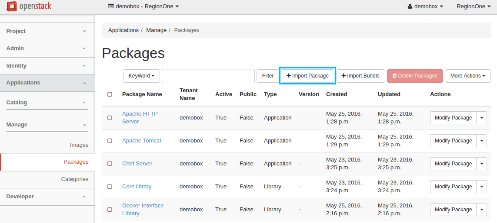
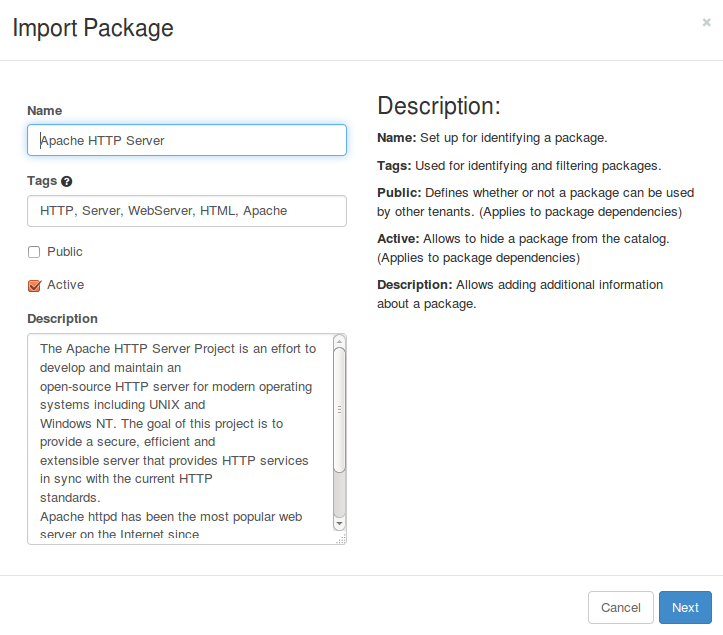
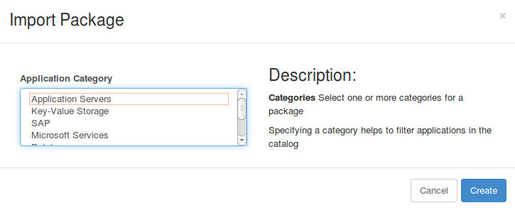
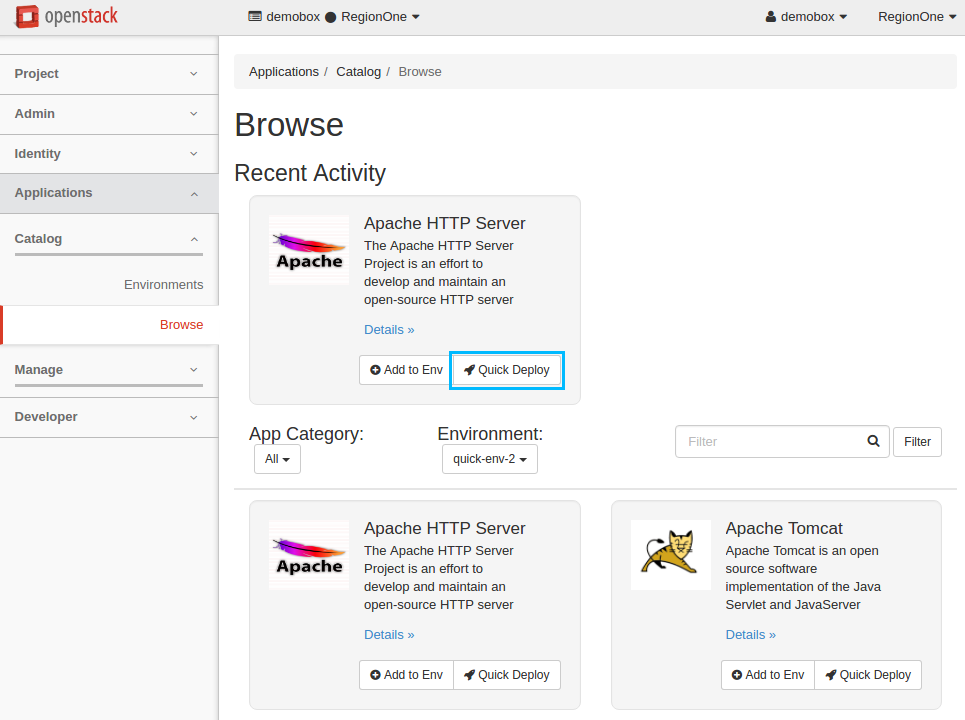
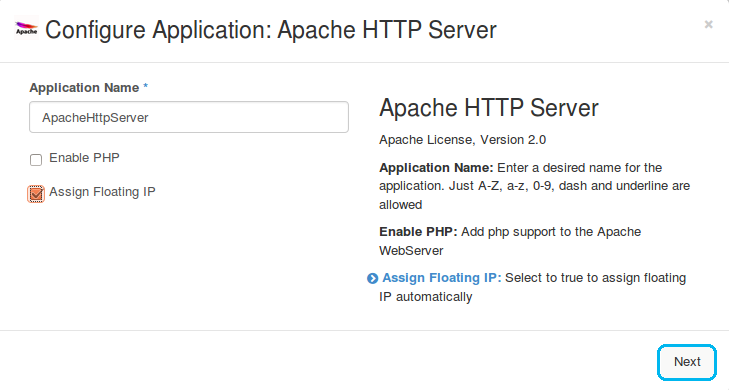
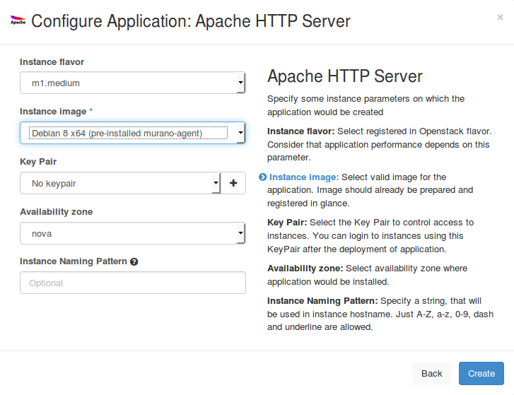
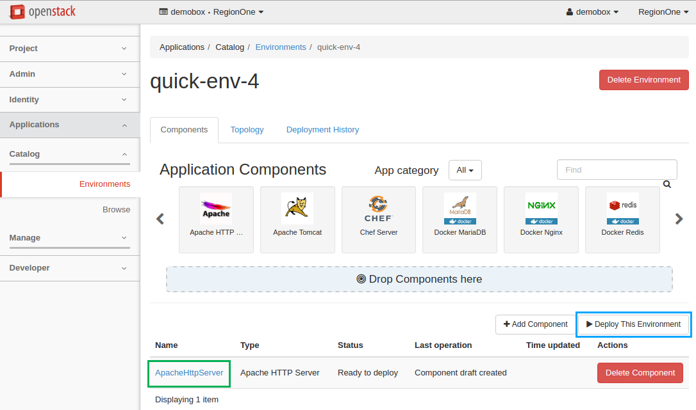

QuickStart¶
This is a brief walkthrough to quickly get you familiar with the basic operations you can perform when using the Application catalog directly from the dashboard.
For the detailed instructions on how to manage your environments and applications, please proceed with dedicated sections.
Upload an application¶
To upload an application to the catalog:
Log in to the OpenStack dashboard.
Navigate to .
Click on the Import Package button:
In the Import Package dialog:
- Select
URLfrom thePackage Sourcedrop-down list; - Specify the URL in the Package URL field. Lets upload the Apache HTTP Server package using http://storage.apps.openstack.org/apps/com.example.apache.ApacheHttpServer.zip;
- Click Next to continue:
- Select
View the package details in the new dialog, click Next to continue:
Select the Application Servers from the application category list, click Create to import the application package:
Now your application is available from page.
{kind=link}
{kind=link}
{kind=link}
{kind=link}
Deploy an application¶
To add an application to an environment’s component list and deploy the environment:
Log in to the OpenStack dashboard.
Navigate to .
Click on the Quick Deploy button from the required application from the list. Lets deploy Apache HTTP Server, for example:
Check Assign Floating IP and click Next to proceed:
Select the Instance Image from the drop-down list and click Create:
Now the Apache HTTP Server application is successfully added to the newly created
quick-env-4environment. Click the Deploy This Environment button to start the deployment:It may take some time for the environment to deploy. Wait until the status is changed from
DeployingtoReady.Navigate to to view the details.
{kind=link}
{kind=link}
{kind=link}
{kind=link}
Delete an application¶
To delete an application that belongs to the environment:
- Log in to the OpenStack dashboard.
- Navigate to .
- Click on the name of the environment to view its details, which include components, topology, and deployment history.
- In the Component List section, click on the Delete Component button next to the application to be deleted. Confirm the deletion.
Note
If an application that you are deleting has already been deployed, you should redeploy it to apply the recent changes. If the environment has not been deployed with this component, the changes are applied immediately on receiving the confirmation.
Warning
Due to a known bug in Murano Kilo, resources allocated by a deleted application might not be reclaimed until the deletion of an environment. See LP1417136 for the details.